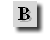
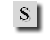

![[ Font ]](pic/font_button.gif) |
Letter type: By pushing this button Globe inserts the
<FONT></FONT> elements into the text
at the position of the cursor and puts it between them. If you want to specify other options concerning FONT element put the cursor before the HTML starting element >
and hit a space. Globe will help you to select parameters. You can read about this function in more detail in the tutorial section.
|
|
Increasing size: By pushing this button Globe inserts the
<FONT SIZE="+1"></FONT> elements into the text
at the position of the cursor and puts it between them. The size of the letters between these signs will be increased by one unit compared with general size. If you want to specify other options put the cursor before the HTML
starting element > and hit a space. Globe will help you to select parameters. You can read about this function in more detail in the tutorial section.
|
|
Decreasing size: By pushing this button Globe inserts the
<FONT SIZE="-1"></FONT> elements into the text
at the position of the cursor and puts it between them. The size of the letters between these signs will be decreased by one unit compared with general size. If you want to specify other options put the cursor before the HTML
starting element > and hit a space. Globe will help you to select parameters. You can read about this function in more detail in the tutorial section.
|
|  |
Bold letters: By pushing this button Globe inserts the
<B></B> elements into the text
at the position of the cursor and puts it between them. The type of the letters between these signs will be bold in other words they will be "thick". If you push the B button when you have selected a part of the text
the operation will concern the selected text. If you want to specify other options put the cursor before the HTML
starting element > and hit a space. Globe will help you to select parameters. You can read about this function in more detail in the tutorial section.
|
![[ Italic ]](pic/italic_button.gif) |
Italic letters: By pushing this button Globe inserts the
<I></I> elements into the text
at the position of the cursor and puts it between them. The type of the letters between these signs will be italic. If you push the I button when you have selected a part of the text
the operation will concern the selected text. If you want to specify other options put the cursor before the HTML
starting element > and hit a space. Globe will help you to select parameters. You can read about this function in more detail in the tutorial section.
|
|  |
STRONG: By pushing this button Globe inserts the
<STRONG></STRONG> elements into the text
at the position of the cursor and puts it between them. Its usage is the same as that of B button.
|
|
Quotation: By pushing this button Globe inserts the
<EM></EM> elements into the text
at the position of the cursor and puts it between them. The type of the letters between these signs will be italic. Its usage is the same as that of I button.
The outcome of using the <EM></EM> elements is: This is a text
|
|
Previously formatted text: By pushing this button Globe inserts the <PRE></PRE> elements into the text
at the position of the cursor and puts it between them. The format of the text between these signs will be exactly the same as you have defined.
The outcome of using the <PRE></PRE> elements is:
A. A. Milne
Winnie the Pooh
On Monday, when the sun is hot
I wonder to myself a lot:
"Now is it true or is it not,
That what is which and which is what?"
|
![[ H1 ]](pic/h1_button.gif) |
Title 1: By pushing this button Globe inserts the
<H1></H1> elements into the text
at the position of the cursor and puts it between them. The text between these signs will appear like this:
Headline 1
|
![[ H2 ]](pic/h2_button.gif) |
Title 2: By pushing this button Globe inserts the
<H2></H2> elements into the text
at the position of the cursor and puts it between them. The text between these signs will appear like this:
Headline 2
|
|
Title 3: By pushing this button Globe inserts the
<H3></H3> elements into the text
at the position of the cursor and puts it between them. The text between these signs will appear like this:
Headline 3
|
|
Lower typesetting: By pushing this button Globe inserts the
<SUB></SUB> elements into the text
at the position of the cursor and puts it between them. The text between these signs will appear like this:
Normal text text between SUB signs
|
|
Upper typesetting: By pushing this button Globe inserts the
<SUP></SUP> elements into the text
at the position of the cursor and puts it between them. The text between these signs will appear like this:
Normal text text between SUP signs
|
![[ reference ]](pic/menu_en_01.jpg)
![[ tutorial ]](pic/menu_en_02.jpg)
![[ history ]](pic/menu_en_03.jpg)
![[ download ]](pic/menu_en_04.jpg)
![[ pictures ]](pic/menu_en_05.jpg)
![[ forum ]](pic/menu_en_06.jpg)
![[ contact ]](pic/menu_en_07.jpg)
![[ Bottom ]](pic/menu_bottom.jpg)
![[ Globe Webeditor reference ]](pic/top_en_01.jpg)